Denomination is the process of scaling one indicator by another quantity to adjust for the effect of size. This is because many indicators are linked to the unit’s size (economic size, physical size, population, etc.) in one way or another, and if no adjustments were made, a composite indicator would end up with the largest units at the top and the smallest at the bottom. Often, the adjustment is made by dividing the indicator by a so-called “denominator” or a denominating variable. If units are countries, denominators are typically things like GDP, population or land area.
COINr’s Denominate() function allows to quickly perform
this operation in a flexible and reproducible way. As with other
building functions, it is a generic which means that it has
different methods for data frames, coins and purses. They are however
all fairly similar.
Data frames
We’ll begin by demonstrating denomination on a data frame. We’ll use the in-built data set to get a small sample of indicators:
library(COINr)
# Get a sample of indicator data (note must be indicators plus a "UnitCode" column)
iData <- ASEM_iData[c("uCode", "Goods", "Flights", "LPI")]
head(iData)
#> uCode Goods Flights LPI
#> 1 AUT 278.42640 29.01725 4.097985
#> 2 BEL 597.87230 31.88546 4.108538
#> 3 BGR 42.82515 9.23588 2.807685
#> 4 HRV 28.36795 9.24529 3.160829
#> 5 CYP 8.76681 8.75467 2.999061
#> 6 CZE 274.13650 15.30953 3.674309This is the raw indicator data for three indicators, plus the “uCode”
column which identifies each unit. We will also get some data for
denominating the indicators. COINr has an in-built set of denominator
data called WorldDenoms:
head(WorldDenoms)
#> # A tibble: 6 × 7
#> uName uCode GDP Population Area GDPpc Income_Group
#> <chr> <chr> <dbl> <dbl> <dbl> <dbl> <chr>
#> 1 Afghanistan AFG 19291104008. 38041754 652860 507. Low income
#> 2 Albania ALB 15279183290. 2854191 27400 5353. Upper middle inc…
#> 3 Algeria DZA 171091289782. 43053054 2381740 3974. Lower middle inc…
#> 4 American Samoa ASM 636000000 55312 200 11467. Upper middle inc…
#> 5 Andorra AND 3154057987. 77142 470 40886. High income
#> 6 Angola AGO 88815697793. 31825295 1246700 2791. Lower middle inc…Now, the main things to specify in denomination are which indicators to denominate, and by what. In other words, we need to map the indicators to the denominators. In the example, the export of goods should be denominated by GDP, passenger flight capacity by population (GDP could also possibly be reasonable), and “LPI” (the logistics performance index) is an intensive variable that does not need to be denominated.
This specification is passed to Denominate() using the
denomby argument. This takes a data frame which includes
“iCode” (the name of the column to be denonimated), “Denominator” (the
column name of the denominator data frame to use), and “ScaleFactor” is
a multiplying factor to apply if needed. We create this data frame
here:
# specify how to denominate
denomby <- data.frame(iCode = c("Goods", "Flights"),
Denominator = c("GDP", "Population"),
ScaleFactor = c(1, 1000))A second important consideration is that the rows of the indicators
and the denominators need to be matched, so that each unit is
denominated by the value corresponding to that unit, and not another
unit. Notice that the WorldDenoms data frame covers more or
less all countries in the world, whereas the sample indicators only
cover 51 countries. The matching is performed inside the
Denominate() function, using an identifier column which
must be present in both data frames. Here, our common column is “uCode”,
which is already found in both data frames. This is also the default
column name expected by Denominate(), so we don’t even need
to specify it. If you have other column names, use the x_iD
and denoms_ID arguments to pass these names to the
function.
Ok so now we are ready to denominate:
# Denominate one by the other
iData_den <- Denominate(iData, WorldDenoms, denomby)
head(iData_den)
#> uCode Goods Flights LPI
#> 1 AUT 6.255713e-10 0.003268788 4.097985
#> 2 BEL 1.121507e-09 0.002776498 4.108538
#> 3 BGR 6.246483e-10 0.001323996 2.807685
#> 4 HRV 4.669422e-10 0.002272966 3.160829
#> 5 CYP 3.513901e-10 0.007304232 2.999061
#> 6 CZE 1.093569e-09 0.001434859 3.674309The function has matched each unit in iData with its
corresponding denominator value in WorldDenoms and divided
the former by the latter. As expected, “Goods” and “Flights” have
changed, but “LPI” has not because it was not included in the
denomby data frame.
Otherwise, the only other feature to mention is the
f_denom argument, which allows other functions to be used
other than the division operator. See the function documentation.
Coins
Now let’s look at denomination inside a coin. The main difference
here is that the information needed to denominate the indicators may
already be present inside the coin. When creating the coin using
new_coin(), there is the option to specify denominating
variables as part of iData (these are variables where
iMeta$Type = "Denominator"), and to specify in
iMeta the mapping between indicators and denominators,
using the iMeta$Type column. To see what this looks
like:
# first few rows of the example iMeta, selected cols
head(ASEM_iMeta[c("iCode", "Denominator")])
#> iCode Denominator
#> 1 LPI <NA>
#> 2 Flights Population
#> 3 Ship <NA>
#> 4 Bord Area
#> 5 Elec Energy
#> 6 Gas EnergyThe entries in “Denominator” correspond to column names that are
present in iData:
# see names of example iData
names(ASEM_iData)
#> [1] "uName" "uCode" "GDP_group" "GDPpc_group"
#> [5] "Pop_group" "EurAsia_group" "Time" "Area"
#> [9] "Energy" "GDP" "Population" "LPI"
#> [13] "Flights" "Ship" "Bord" "Elec"
#> [17] "Gas" "ConSpeed" "Cov4G" "Goods"
#> [21] "Services" "FDI" "PRemit" "ForPort"
#> [25] "Embs" "IGOs" "UNVote" "CostImpEx"
#> [29] "Tariff" "TBTs" "TIRcon" "RTAs"
#> [33] "Visa" "StMob" "Research" "Pat"
#> [37] "CultServ" "CultGood" "Tourist" "MigStock"
#> [41] "Lang" "Renew" "PrimEner" "CO2"
#> [45] "MatCon" "Forest" "Poverty" "Palma"
#> [49] "TertGrad" "FreePress" "TolMin" "NGOs"
#> [53] "CPI" "FemLab" "WomParl" "PubDebt"
#> [57] "PrivDebt" "GDPGrow" "RDExp" "NEET"So in our example, all the information needed to denominate is already present in the coin - the denominator data, and the mapping. In this case, to denominate, we simply call:
# build example coin
coin <- build_example_coin(up_to = "new_coin", quietly = TRUE)
# denominate (here, we only need to say which dset to use)
coin <- Denominate(coin, dset = "Raw")
#> Written data set to .$Data$DenominatedIf the denomination data and/or mapping isn’t present in the coin, or
we wish to try an alternative specification, we can also pass this to
Denominate() using the denoms and
denomby arguments as in the previous section.
This concludes the main features of Denominate() for a
coin. Before moving on, consider that denomination needs extra care
because it radically changes the indicator. It is a nonlinear
transformation because each data point is divided by a different value.
To demonstrate, consider the “Flights” indicator that we just
denominated - let’s plot the raw indicator against the denominated
version:
plot_scatter(coin, dsets = c("Raw", "Denominated"), iCodes = "Flights")
This shows that the raw and denominated indicators show very little resemblance to one another.
Purses
The final method for Denominate() is for purses. The
purse method is exactly the same as the coin method, except applied to a
purse.
An important consideration here is that denominator variables can and do vary with time, just like indicators. This means that e.g. “Total value of exports” from 2019 should be divided by GDP from 2019, and not from another year. In other words, denominators are panel data just like the indicators.
This is why denominators are ideally input as part of
iData when calling new_coin(). In doing so,
denominators are another column of the data frame like the indicators,
and must have an entry for each unit/time pair. This also ensures that
the unit-matching of denominator and indicator is correct (or more
accurately, I leave that up to you!).
In our example purse, the denominator data is already included, as is the mapping. This means that denomination is exactly the same operation as denominating a coin:
# build example purse
purse <- build_example_purse(up_to = "new_coin", quietly = TRUE)
# denominate using data/specs already included in coin
purse <- Denominate(purse, dset = "Raw")
#> Written data set to .$Data$Denominated
#> Written data set to .$Data$Denominated
#> Written data set to .$Data$Denominated
#> Written data set to .$Data$Denominated
#> Written data set to .$Data$DenominatedIn fact if you try to pass denominator data to
Denominate() for a purse via denoms, there is
a catch: at the moment, denoms does not support panel data,
so it is required to use the same value for each time point. This is not
ideal and may be sorted out in future releases. For now, it is better to
denominate purses by passing all the specifications via
iData and iMeta when building the purse with
new_coin().